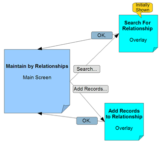
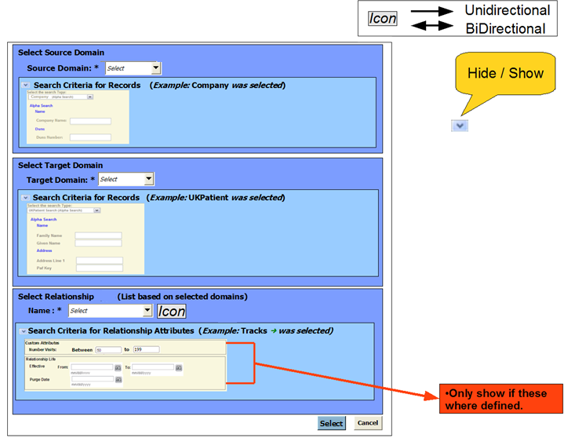

Manage->Relationship->Maintain->by
Relationship
Use Cases
- User wants to see records that are associated with a
Relationship Type between two specific domains.
- User selects the Relationship type and optionally supplies
search criteria for records in the selected relationship.
- User selects a relationship instance to view record
summararies and view / update Relationship properties.
Screen Overview and Main Screen Flow
- Main Screen
-
- Displays relationship summary of records
- Displays records in relationship as per search
- Allows user to select a relationship instance to view
record summaries and associated relationship attributes
- Search for Relationship Overlay
-
- Select a Relationship Type and specifiy search criteria
for
the records to retrieve
- Add Records to Relationship
-
- Add a Relationship of the currently selected type
between
selected records

Screen Parts
"Search for Relationship" Overlay
When the user choices the By Relationship option or Search... option
the following will be shown.
Note:
This is a wireframe of the Search for Realtionship Overlay.
The Screen Flow for this Overlay can be seen by opening the following:
View Search for
Relationship Screen Flow

Nice to
have
- Show the number of records the search will retrieve.
This allows the user to fine tune the search criteria prior
to actually getting all the records.
Main By Relationship Screen
The following screen is an example after the search and a record has
been selected by the user by choosing a hyperlink Record Identifier.
When the user choices the By Relationship option or Search... option
the following will be shown.
If no relationship type has bee
Updates
Needed
- A submit button for the Relationship Attributes area
An even better design might be to have the search area
(Relationship records for) expand to take up most of the screen with
the search area appearing below an area that collapses and expands to
show the search. After the search the area would colapse to
the
above view except that this is now just a summary.
For now we will go with the overlay. ...
"Add Records to Relationship" Overlay
- The Add Records... button brings the following overlay supports
- Search and select multiple
records from the source
domain
- Search and select multiple
records from the destination
domain
- Enter default and other relationship attribute values
- All
records found by the search will be linked. So
if the user selected the records A, B, C from the
source domain and the records 1,2, 3 from the
destination domain and specified no relationship attributes, they would
be defining the following
relationships. (where -- is the relationship type).
A summary of all selected records will be shown with the option to
remove unwanted relationships. The overlay
- A -- 1
- A -- 2
- A -- 3
- B -- 1
- B -- 2
- B -- 3
- C -- 1
- C -- 2
- C -- 3
Note:
This is a
functional wireframe of the Add Records to Relationship Overlay.
This page last
changed on 01-Oct-2008 13:45:00 PDT by andreakendall@dev.java.net